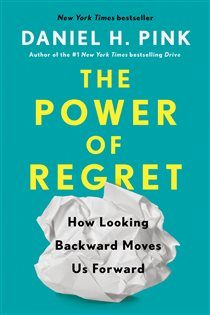

Library › Psychology & People
The Power of Regret — Summary & Key Lessons

How looking backward moves us forward — the world's most misunderstood emotion, decoded from 16,000 regrets.
📖 OPEN THE FULL INTERACTIVE BREAKDOWN →🌐 Read it in Hindi, Hinglish, Gujarati, Tamil & 22 more languages — free, with audio.
💡 The Big Idea
The 'no regrets' tattoo culture gets the science exactly backward: regret is the most common negative emotion in human life and among the most USEFUL — a cognitive time-machine (counterfactual thinking: 'if only...') that, processed correctly, sharpens decisions, deepens meaning, and boosts performance. Pink's World Regret Survey (16,000+ regrets, 105 countries) found virtually all regrets sort into FOUR families: FOUNDATION regrets ('if only I'd done the work' — small bad choices compounding: not saving, not studying, not exercising), BOLDNESS regrets ('if only I'd taken the risk' — the business not started, the person not asked, the trip not taken; INACTION regrets outnumber action regrets 2-3x and grow with age while action regrets fade), MORAL regrets ('if only I'd done the right thing' — fewest in number, loudest at 3 AM: the bullying, the betrayal, the lie), CONNECTION regrets ('if only I'd reached out' — the largest family: drifted friendships and unsaid words, ended by awkwardness that research shows the other side almost never feels). The reverse-image insight: your regrets are a photo-negative of your values — what you regret reveals what you need (stability, growth, goodness, love). The processing protocol: self-DISCLOSURE (writing/telling converts emotional fog into cognitive material), self-COMPASSION (treat yourself as you'd treat a friend — beats both self-flagellation and self-esteem pumping), self-DISTANCING (advise 'a friend' with your problem; zoom to 10 years out), then extract the lesson and act. Anticipated regret even works prospectively: the 10/10/10 test and 'deathbed audit' de-bias big calls — mainly by pushing you toward boldness and connection, where future-you keeps the receipts.
🧠 The 4 Key Lessons
Lesson 1: The Four Regrets — and What Each One Is Telling You
Parts 1-2
Surface regrets vary infinitely (careers, romance, money, health); deep structure doesn't. FOUNDATION regrets whisper 'do the work': they're conscientiousness debts — tiny reasonable-seeming choices (skip the saving, skip the class, skip the gym) whose compounding only becomes visible decades later; their lesson is boring and non-negotiable: start now, automate virtue. BOLDNESS regrets shout 'take the chance': at every age, in every country, the un-taken risk outweighs the failed attempt — psychology's explanation: failures resolve (you learn, adapt, retell), but 'what might have been' stays open forever, an unclosable loop. MORAL regrets say 'be better': fewest but deepest — decades later people still burn over childhood cruelties and adult betrayals; conscience keeps immaculate books. CONNECTION regrets plead 'reach out': the drifted friend, the unvisited parent, the unsaid gratitude — killed by the awkwardness illusion (we massively overestimate how weird reconnection will feel; recipients report overwhelmingly feeling honored). Diagnose your own top regret's family and you've found your value hierarchy — and this quarter's assignment.
📖 Example: Pink's survey voices: the 52-year-old whose foundation regret ('I treated saving as optional in my 20s') now sets her students' curriculum; the retired lawyer whose boldness regret — not saying yes to a startup co-founder invitation in 1998 — he rates above… Read the full example →
⚡ Do this: Write your three biggest regrets and tag each by family (foundation/boldness/moral/connection). The dominant tag is your value speaking. Design one act per tag this month — an automated habit, a risk taken, an amends made, a call placed.
Lesson 2: Process, Don't Marinate: Disclosure, Compassion, Distance
Part 3
Regret's power depends entirely on processing mode. MARINATING (rumination — replaying the loop) correlates with depression and worse decisions; SUPPRESSING ('no regrets!') forfeits the data. The working protocol: (1) SELF-DISCLOSURE — write about the regret 15 minutes for three days, or tell someone: language forces structure onto emotional fog, and studies show writing about negative experiences (unlike positive ones, which are best savored unanalyzed) reliably reduces their sting while extracting their lesson; (2) SELF-COMPASSION (Kristin Neff's research) — address yourself as you would a beloved friend with the same failure: it outperforms self-criticism (which predicts avoidance) AND self-esteem inflation (which requires denial); normalize ('humans do this') without excusing; (3) SELF-DISTANCING — third-person review ('what should Jash learn from this?'), the 10-year zoom, or the advisor flip ('what would I tell a friend?'): distance converts the regret from wound to case study. Then the closing move: extract ONE if-then rule for the future ('if a friendship matters, then I schedule the call quarterly') — regret's entire ROI is the rule it leaves behind.
📖 Example: Pink's synthesis of the lab evidence: Kross's distancing studies (participants analyzing setbacks in third person showed less distress and better problem-solving than first-person ruminators); Pennebaker's expressive-writing lineage (health and clarity gains… Read the full example →
⚡ Do this: Take your heaviest regret through the full protocol this week: 3 × 15-minute writing sessions → one paragraph in third person ending with 'what should they learn?' → one if-then rule installed on your calendar/systems → if it's a connection regret: send the message today; awkwardness is a liar.
Lesson 3: Use Regret Forward: The Pre-Mortem on Your Life
Part 4
Anticipated regret is decision-making's cheat code — with a manual. It de-biases the big stuff: before major choices, run the DEATHBED AUDIT ('at 80, which option will I wish I'd chosen?' — reliably surfaces boldness and connection, the families old-you weeps over) and 10/10/10 (how will I feel in 10 minutes / 10 months / 10 years — rescuing long-term values from short-term discomfort). Two warnings from the research: don't over-apply it to SMALL decisions (maximizers who anticipate regret on every toothpaste purchase are measurably less happy — satisfice the trivial); and beware its distortions in edge cases (people irrationally avoid switching answers/queues because anticipated regret of action looms larger than inaction — even though the switch is usually right). Pink's operating summary: optimize for the four families in advance — do the boring foundations daily, take the values-aligned risk, keep the moral line unbroken, and make the call — because the entire dataset of 16,000 backward glances compresses into one forward instruction: be bolder and kinder than feels comfortable, starting with the phone in your pocket.
📖 Example: Bezos's founding story — retold in the book as the framework's poster child: the 'Regret Minimization Framework,' invented (he says) to decide on leaving a hedge-fund salary in 1994: 'At 80, would I regret trying and failing at this internet thing? No. Would… Read the full example →
⚡ Do this: Install two rituals: (1) for any decision bigger than a purchase, write the 80-year-old's one-sentence verdict on each option before choosing; (2) monthly, ask 'which future regret am I currently manufacturing?' — then do this month's smallest countermeasure (the call, the deposit, the apology, the application).
Lesson 4: The Regret Résumé and Anticipating Wisely: A Personal Operating System
Coda: Regret and Redemption
Pink's synthesis tool is the REGRET RÉSUMÉ: alongside your CV of achievements, write the honest inventory of your significant regrets — not as self-punishment but as a values X-ray (the CV shows what you did; the regret résumé shows what you CARE about), reviewed annually like any strategic document. From it, derive your personal operating rules: foundation regrets → automate the boring virtue (standing SIP, calendar-blocked health); boldness regrets → install a default-to-action policy for opportunities above a threshold ('when torn between safe and growth, choose growth — signed, past me'); moral regrets → pre-commit your lines BEFORE temptation (the time to decide about integrity is never in the moment); connection regrets → a standing reach-out ritual (one revived contact monthly). Pink adds the FAILURE VACCINE of self-disclosure norms: teams and families that talk about regrets normally (his 'regret circles' — structured sharing of one regret + its lesson) make everyone's future decisions collectively smarter, because hidden regrets teach only their owner, while shared ones teach the room. The closing reframe deserves its own line: regret's message was never 'you are bad' — it was always 'you believed in something better. Go build it.'
📖 Example: Pink's own regret résumé, published in the book as demonstration: kindness withheld in college (connection/moral), risks deferred in early career (boldness), and the entrepreneurial leap delayed years past the evidence (boldness again) — from which his… Read the full example →
⚡ Do this: Write your regret résumé this weekend: your 5-7 significant regrets, each tagged by family, each converted into ONE standing personal rule with a trigger ('when X, I do Y'). Put the rules where decisions happen (wallet card, phone note). Review and update every birthday — your regrets will change; that's the system working.
✅ 5-Step Action Plan
- Tag your top regrets by family — foundation, boldness, moral, connection — and read them as values.
- Process, never marinate: write it, befriend yourself, review it from a distance.
- Convert every processed regret into one installed if-then rule.
- Run the deathbed audit and 10/10/10 on big decisions; satisfice the small ones.
- Send the reconnection message today — the awkwardness is imaginary; the window isn't.
💬 Best Quotes from The Power of Regret
- “Regret is not dangerous or abnormal. It is healthy and universal, an integral part of being human.”
- “What we regret most is not what we did, but what we didn't do.”
- “Regrets are a photographic negative of the good life.”
Interactive version: mark lessons as read, listen in your language, share quote cards.